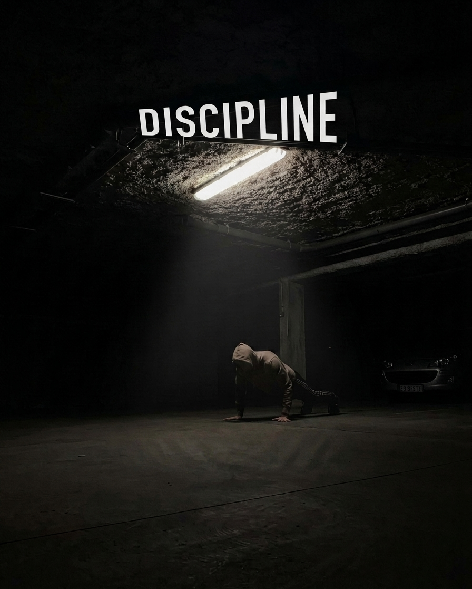

Elon Musk
Big Dreams & New Thinking
From his journey, we can learn to dream big, think differently, and keep searching for solutions to difficult problems.
Success is a long journey of achieving our goals and dreams in life. The meaning of success can be different for every person.
For some people, getting good results may be success. For others, building a career of their choice may be success. For someone else, doing something good for society may be the true meaning of success.
However, true success does not depend only on money, fame, or power. The main foundations of success are goals, hard work, discipline, concentration, and patience.
Sometimes our own bad habits become a bigger obstacle to success than the obstacles outside us.
Laziness, wasting time, delaying work, excessive mobile phone use, lack of interest in study, and negative thinking can waste our valuable time and energy.
If we truly want to become successful, we must first identify our bad habits and try to change them.
Building one good habit every day can bring a great change in the future.
Friendship has a great influence on a person's life.
The thoughts, behavior, and habits of the people with whom we spend most of our time can also influence us.
The wrong friendship can take us away from our goals, while a good friend can give us encouragement and courage during difficult times.
Therefore, we should think about how our friendships may affect our future and character.
Discipline is one of the most important qualities of a successful life.
If we think that we will work only when we feel like it, achieving a big goal becomes difficult.
To become successful, we should use our time properly every day.
We should maintain a balance between study, rest, necessary activities, and work according to our goals.
A disciplined person continues to complete even small tasks regularly, and those small efforts can create big results one day.

Dreaming is easy, but turning those dreams into reality requires hard work.
Even if someone has talent, that talent has little value if it is not supported by effort.
Becoming skilled in any subject requires regular practice and patience.
We may not succeed on the first or second attempt, but every attempt teaches us something new.
Therefore, instead of leaving everything to luck, we should sincerely work toward our goals.
It is difficult to become successful without having a clear goal.
Trying to focus on many things at the same time can make our minds confused.
Therefore, we should decide our main goal and focus on it.
This does not mean that we should completely ignore other responsibilities. Rather, it means understanding our priorities and using our time and energy properly.
When we work regularly toward one goal, both our skills and confidence increase.
Mistakes and failures are normal parts of life. No person becomes successful in everything on the very first attempt.
If we keep feeling sad about failure, we cannot move forward.
Learning from our past mistakes and avoiding the same mistakes again is true learning.
We do not need to forget the past, but we should not allow past failures to become obstacles to our future.
Obstacles will always appear on the road to success. Sometimes the result may not be what we expected.
Sometimes other people may discourage us.
During such times, it is very important to believe in ourselves and our goals.
Failure is not the end; it is an opportunity to improve.
A person who learns from failure and tries again can eventually move closer to their goal.
Their lives were different, but their stories teach us valuable lessons about hard work, creativity, discipline, knowledge, courage, and perseverance.
From his journey, we can learn to dream big, think differently, and keep searching for solutions to difficult problems.

His life teaches us to think differently, be creative, and believe in our ideas.

His success teaches us about regular practice, discipline, hard work, and improving ourselves every day.

His life teaches us to ask questions, observe, and understand subjects deeply.

We can learn to remain curious, think independently, and look at problems from different perspectives.

His story teaches us to create new things and continue trying when obstacles appear.

His life teaches us to continue seeking knowledge and remain determined toward our goals.

His extraordinary interest in mathematics teaches us to recognize our talents and develop them.

His life teaches us to dream big, gain knowledge, and work hard toward our goals.

His life teaches us about truth, non-violence, patience, and standing firmly by our principles.

His teachings emphasize peace, self-control, and thoughtful living.

His success teaches us about regular training, discipline, hard work, and confidence.

His career teaches us to develop our talents, be creative, and remain dedicated to our work.

His journey teaches us to recognize our talents and develop them through creativity, hard work, and perseverance.

His work teaches us about creativity, consistent effort, patience, and trying new ideas.
From the lives of these great people, we learn one common lesson — success requires not only talent, but also hard work, patience, discipline, and concentration.
Success is not the result of a single day. It is the result of many days of small efforts, learning, hard work, and patience.
Learning from our mistakes and moving forward consistently is the path to success.
Success is not magic. By turning dreams into goals and goals into regular action, and by working hard with discipline, we can move toward success.